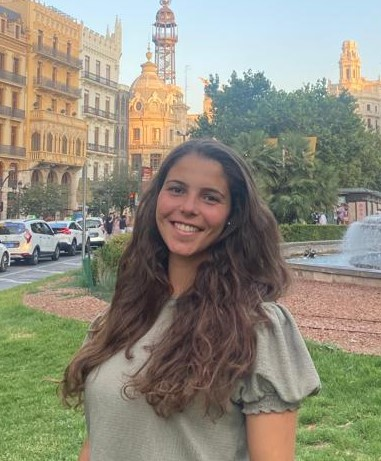

Catarina Ventura

Sobre mim
Olá! Sou a Catarina Ventura, tenho 21 anos e sou natural da Lourinhã.
Desde cedo que o gosto pelo desporto está presente na minha vida e já não me imagino a viver sem ele. Pratiquei futsal federado durante muitos anos e é um desporto que me apaixona. Neste momento, gosto de fazer exercício físico no ginásio, em casa e ao ar livre. Poder estar em contacto com a natureza é fantástico.